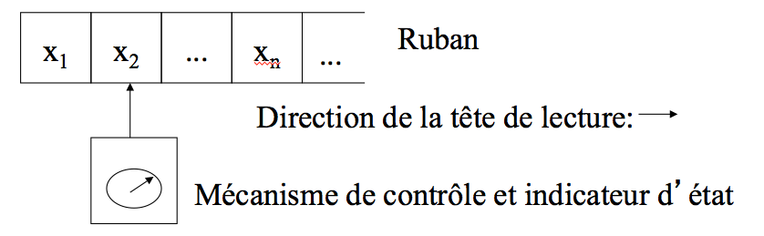

Julien Marcil - julien.marcil@ift.ulaval.ca
Nous étudierons des modèles de calcul de plus en plus sophistiqués, en analysant les limites de chaque modèle.
En apprenant à programmer, on a souvent l’impression que toute tâche de calcul est réalisable par un programme suffisamment long et complexe. Cette intuition est fausse et certaines tâches n’admettent aucun algorithme.
Le produit cartésien des ensembles $A$ et $B$, noté $A \times B$, est l’ensemble de tous les paires d'éléments de $A$ et $B$.
$$A \times B = \{(a,b) \mid a \in A, b \in B \}$$
\[\begin{aligned} \{a,b\}\times\{1,2,3\} = \{ &(a,1), (a,2), (a,3), \\ & (b,1), (b,2), (b,3) \} \\ \{1,2\}^2= \{ & (1,1), (1,2), (2,1), (2,2) \} \end{aligned} \]
L’ensemble puissance de $A$, noté $\mathcal P(A)$, est l’ensemble de tous les sous-ensembles de $A$.
$$\mathcal P(A) = \{E \mid E \subseteq A\}$$
\[\begin{aligned} \mathcal P(\{0,2,4\}) = \{ &\emptyset,\{0\},\{2\},\{4\}, \\ & \{0,2\},\{2,4\},\{0,4\},\{0,2,4\}\} \end{aligned} \]
$f: A \to B$ signifie que $f$ est une fonction de l'ensemble $A$ dans l'ensemble $B$.
Une fonction est injective si $\forall x, y \in X,\ x \ne y \Rightarrow f(x) \ne f(y)$
Une fonction est surjective si $\forall y \in Y,\ \exists x \in X,\ f(x) = y$
Une fonction est bijective si elle est injective et surjective.
La cardinalité d’un ensemble $S$, notée $\left\vert{S}\right\vert$, est la taille de cet ensemble, la quantité d’éléments qu’il contient.
$$ \left\vert{\{i \in \mathbb{N} \mid 0 \le i < n\}}\right\vert = n $$
La cardinalité d’un ensemble $S_1$ est inférieure ou égale à la cardinalité d’un ensemble $S_2$ (dénoté par $\left\vert{S_1}\right\vert \le \left\vert{S_2}\right\vert$) ssi il existe une fonction injective $f: S_1 \to S_2$.
La cardinalité d ’un ensemble $S_1$ est égale à la cardinalité d’un ensemble $S_2$ (dénoté par $\left\vert{S_1}\right\vert=\left\vert{S_2}\right\vert$) ssi il existe une fonction bijective $f: S_1 \to S_2$.
La cardinalité d ’un ensemble $S_1$ est inférieure à la cardinalité d’un ensemble $S_2$ (dénoté par $\left\vert{S_1}\right\vert < \left\vert{S_2}\right\vert$) ssi $\left\vert{S_1}\right\vert \le \left\vert{S_2}\right\vert$ et $\left\vert{S_1}\right\vert \ne \left\vert{S_2}\right\vert$.
Un ensemble $S$ est dit fini ssi $\left\vert{S}\right\vert < \left\vert{\mathbb{N}}\right\vert$
Un ensemble $S$ est dit infini ssi $\left\vert{S}\right\vert \ge \left\vert{\mathbb{N}}\right\vert$
Un ensemble $S$ est dénombrable ssi on peut donner une méthode pour énumérer ses éléments de telle sorte que n’importe quel élément soit nommé après un nombre fini d’étapes.
Il existe donc une bijection $ f : \mathbb{N} \to S $.
Soit $T = \{k \mid \exists_{n \in \mathbb{N}} \ k = 3n\}$
La fonction $f: \mathbb{N} \to T$, définie $f(n)=3n$, est bijective.
Donc $T$ est dénombrable, $\left\vert{T}\right\vert=\left\vert{\mathbb{N}}\right\vert$.
Énumérer les couples dont la somme des composantes est 0, ensuite 1, puis 2, ...
| Somme | |||||
|---|---|---|---|---|---|
| 0 | (0, 0) | ||||
| 1 | (1, 0) | (0, 1) | |||
| 2 | (2, 0) | (1, 1) | (0, 2) | ||
| 3 | (3, 0) | (2, 1) | (1, 2) | (0, 3) | |
| 4 | (4, 0) | (3, 1) | (2, 2) | (1, 3) | (0, 4) |
| 5 | ... | ||||
Nous avons défini ce qu’est un ensemble non dénombrable mais nous n’en avons pas encore rencontré.
Soit un ensemble $S$ (fini ou infini).
$$ \left\vert{S}\right\vert < \left\vert{\mathcal P(S)}\right\vert $$
Dans une démonstration, quand on arrive à une contradiction, on peut conclure que la dernière hypothèse qu’on a faite était fausse.
C’est ce même raisonnement qui nous permet de faire une démonstration par contradiction : on suppose que ce qu’on veut démontrer est faux, et on démontre que ça implique une contradiction. Ce genre de démonstration est basé sur l’équivalence :
$$ (\neg p \Rightarrow \text{faux}) \Leftrightarrow p$$
$$ \left\vert{\mathbb{N}}\right\vert < \left\vert{\mathcal P(\mathbb{N})}\right\vert $$
Ce corollaire montre qu’il y a des ensembles infinis de cardinalités différentes.
Définition: Un alphabet est un ensemble fini non vide de symboles. Souvent dénoté par $\Sigma$.
Exemple : $\Sigma = \{a, b, c\}$.
Un caractère et un symbole sont des synonymes.
Une chaîne, une séquence, une suite de caractères ou un mot sont des synonymes.
Définition: La concaténation de deux séquences $s_1$ et $s_2$ notée $s_ 1s_2$ est une séquence composée de tous les symboles de $s_1$ suivis de ceux de $s_2$.
Définition: La séquence ne contenant aucun symbole, appelée séquence vide, fait partie des séquences de symboles. Elle est dénotée $\lambda$.
$$\lambda s = s\lambda= s$$
Définition: Le symbole $^*$ représente l’opérateur de Kleene, qui, appliqué à un alphabet $\Sigma$, donne l'ensemble infini $\Sigma^*$ de toutes les séquences finies de symboles de cet alphabet. On dit que $\Sigma^*$ est la fermeture de l’alphabet $\Sigma$.
Note : la séquence vide $\lambda$ appartient à $\Sigma^*$ pour tout alphabet $\Sigma$.
La fermeture d’un alphabet est un ensemble infini mais dénombrable.
Si $\Sigma = \{a,b,c\}$ alors
$$ \Sigma^* = \{\lambda, a, b, c, aa, ab, ac, \dots, aaa, aab, aac, \dots, \\ aaaa, aaab, aaac, \dots\} $$
Soient $\Sigma$ un alphabet quelconque, $s \in \Sigma^*$ et $n \in \mathbb{N}$. Alors, $$s^n = \underbrace{s \dots s}_{n~\text{fois}}$$
\[\begin{aligned} a^4 & = aaaa \\ (mn)^2t^3 & = mnmnttt \end{aligned} \]
L’ensemble $\{a^mba^n : m \in \mathbb{N}, n \in \mathbb{N}\}$ est l’ensemble des séquences ayant un seul $b$, précédé et suivi d’un nombre quelconque de $a$.
Le nombre de $a$ qui précède ce $b$ n’est pas nécessairement le même que celui qui suit.
Il y a une certaine similarité entre $\Sigma^*$ et $\mathcal P(\Sigma)$ mais ces ensembles sont bien différents.
Soit $\Sigma = \{a\}$. \[\begin{aligned} \mathcal P(\Sigma) & = \{ \emptyset, \{ a \} \} \\ \Sigma^* & = \{ \lambda, a, aa, aaa, \dots \} \end{aligned} \]
Définition: La longueur d’une séquence finie $w$, notée $\left\vert{w}\right\vert$, est le nombre de symboles qu’elle contient.
Soit $\Sigma = \{a, b, c\}$. \[\begin{aligned} \left\vert{a}\right\vert & = 1 \\ \left\vert{abc}\right\vert & = 3 \\ \left\vert{aaa}\right\vert & = 3 \end{aligned} \]
Définition: Un langage sur un alphabet $\Sigma$ est un sous-ensemble de l’ensemble $\Sigma^*$.
Soit $\Sigma = \{a, b, c\}$. Les ensembles suivants sont des langages sur $\Sigma$: \[\begin{aligned} L_1 & = \{a, b, aa, abc, abbc \} \\ L_2 & = \{ \lambda, a, aa, aaa, \dots \} \end{aligned} \]
L’ensemble de tous les langages sur un alphabet $\Sigma$ est $\mathcal P(\Sigma^*)$.
Comme $\Sigma^*$ est infini et que $$\left\vert{\Sigma^*}\right\vert < \left\vert{\mathcal P(\Sigma^*)}\right\vert$$ on voit que l’ensemble des langages sur un alphabet donné est non dénombrable.
Considérons des machines $M$ dont les entrées sont un mot d’un alphabet $\Sigma$ et dont la sortie est toujours $0~\text{ou}~1$.
$$ \begin{align} \text{Entrée} \longrightarrow & \boxed{M}& \longrightarrow & \text{Sortie} \\ \Sigma^* \longrightarrow & f : \Sigma^* \to \{0,1\} & \longrightarrow & \{0,1\} \end{align} $$
On peut aussi dire que la machine accepte ou rejette son entrée.
Définition: L’ensemble des mots acceptés par la machine $M$ est le langage de $M$ que l’on notera $L(M)$
$$ L(M) \in \mathcal P(\Sigma^*) $$
Il existe une fonction que votre langage de programmation favori ne peut calculer.
L’ensemble des programmes que l’on peut écrire est dénombrable. Donc, il existe un nombre infini non-dénombrable de fonctions pour lesquelles il n’existe aucun programme capable de les calculer.
Un diagramme de transitions est une collection finie d’états (cercles) et de transitions (arcs orientés) tel que:
Une table de transitions associée à un diagramme de transitions est une matrice à deux dimensions telle que:
| lettre | chiffre | FIN | |
|---|---|---|---|
| 1 | 3 | 2 | $\text{ERREUR}$ |
| 2 | $\text{ERREUR}$ | $\text{ERREUR}$ | $\text{ERREUR}$ |
| 3 | 3 | 3 | $\text{ACCEPTE}$ |
Définition: Un diagramme de transitions avec un alphabet $\Sigma$ est dit complètement défini si, pour chaque symbole $s \in \Sigma$ et chaque état $e$, il y a au moins une transition étiquetée $s$ qui quitte $e$.
Définition: Un diagramme de transitions avec un alphabet $\Sigma$ est dit non ambigu si, pour chaque état et chaque symbole $s \in S$, il existe au plus une transition quittant $e$ et étiquetée $s$.
Définition: Un diagramme de transitions avec un alphabet $\Sigma$ est dit déterministe si il est complètement défini et non ambigu.
Définition: Un automate fini déterministe consiste en un quintuple de la forme $(S, \Sigma, \delta, \iota, F)$ où
$$ M =(\{A, B, C\}, \{a, b, c\}, \delta, A, \{A, B\}) $$
| $\delta(A, a) = B$ | $\delta(A, b) = C$ | $\delta(A, c) = A$ |
| $\delta(B, a) = A$ | $\delta(B, b) = B$ | $\delta(B, c) = C$ |
| $\delta(C, a) = A$ | $\delta(C, b) = B$ | $\delta(C, c) = C$ |
Donner le diagramme de transitions de l’automate suivant: $M = (\{0, 1, 2, 3\}, \{f, g, h\}, \delta, 0, \{2\})$
tel que
| $\delta(0, f) = 3$ | $\delta(0, g) = 1$ | $\delta(0, h) = 1$ |
| $\delta(1, f) = 1$ | $\delta(1, g) = 2$ | $\delta(1, h) = 3$ |
| $\delta(2, f) = 0$ | $\delta(2, g) = 3$ | $\delta(2, h) = 3$ |
| $\delta(3, f) = 3$ | $\delta(3, g) = 3$ | $\delta(3, h) = 3$ |
Soit $\Sigma = \{a, b\}$. Donner l’automate $M$ correspondant au diagramme de transition ci-dessous.
Un automate fini déterministe possède les caractéristiques suivantes:
On peut voir un automate comme une machine avec un ruban contenant une séquence de symboles à analyser, une tête de lecture et un mécanisme de contrôle qui peut changer d’état.

L’automate accepte la séquence d’entrée si et seulement si la transition effectuée lors de la lecture du dernier symbole l’amène dans un état final (accepteur).
Définition: L’automate fini déterministe $M = (S, \Sigma, \delta, \iota, F)$ accepte (ou reconnaît) la séquence $x = x_1x_2x_3\dots x_n$ (où $s_i \in \Sigma$) si et seulement si il y a une séquence d’états $s_0, s_1, s_2, \dots, s_n$ (où $s_i \in S$) tels que $$\iota = s_0$$ et $$\forall_{j=1,\dots,n} \ \delta(s_{j-1}, x_j) = s_j$$ et $$ s_n \in F $$
Dans le cas contraire, on dit que l’automate rejette la séquence.
Soit M l’automate déterministe décrit par le diagramme de transitions suivant. Son alphabet est $\{0, 1, 2, 3, 4, 5, 6, 7, 8, 9, .\}$. Le symbole $C$ représente l’ensemble des chiffres: $C = \{0, 1, 2, 3, 4, 5, 6, 7, 8, 9\}$
La séquence vide et elle est acceptée par $M = (S, \Sigma, \delta, \iota, F)$ si l’état initial est aussi un état final ($\iota \in F$). Aucune transition n’est faite.